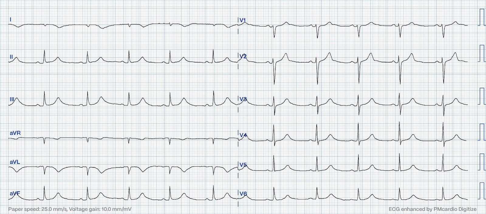
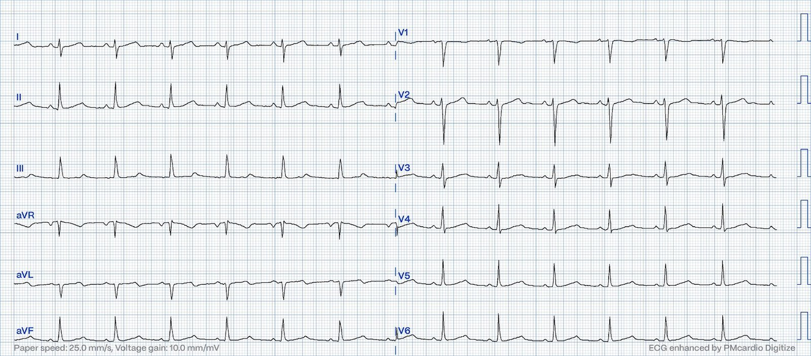
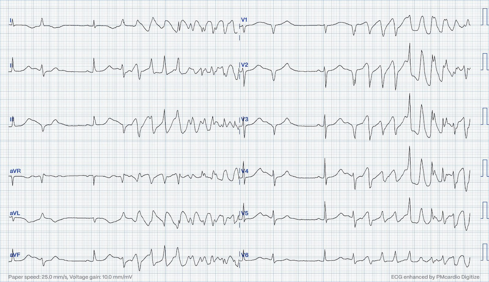
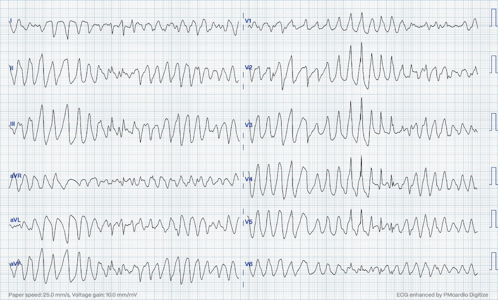
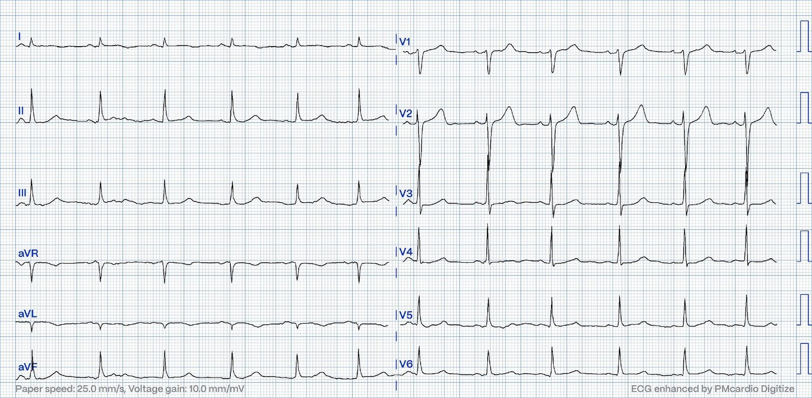
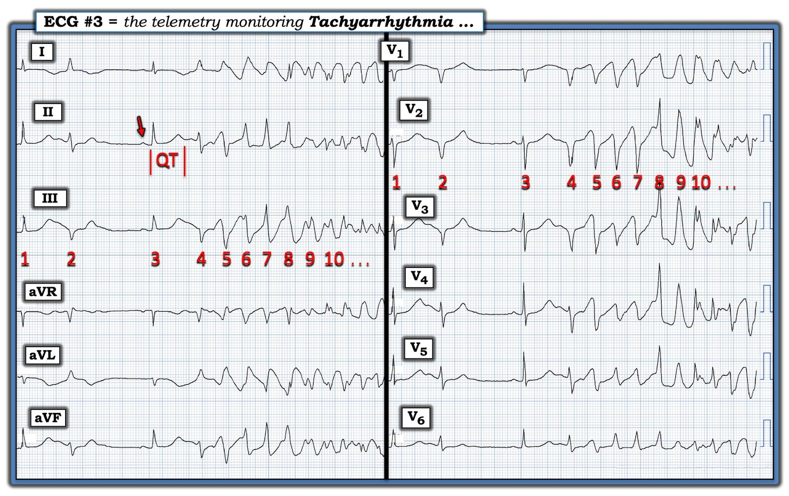

18/10/2023 — Một phụ nữ ngoài 20 tuổi bị ngừng tim
Bản dịch tiếng Việt của bài "A 20-something woman with cardiac arrest." – Dr. Smith’s ECG Blog. Giữ nguyên toàn bộ 7 hình ảnh của bản gốc.
Bệnh nhân là một phụ nữ ngoài 20 tuổi. Cô khỏe mạnh, không có bệnh tim đã biết. Cô được nhập khoa thần kinh vì đau đầu và nôn. Cô được phát hiện bị nhiễm virus hệ thần kinh trung ương (CNS).
Vài ngày sau khi nằm viện, cô xuất hiện khó chịu ở ngực và điện tâm đồ sau đây được ghi lại.


Bạn nghĩ gì? Tại sao sóng T lại lớn như vậy? Đây có phải là sóng T tối cấp không? Có lẽ nào những thay đổi điện tâm đồ này liên quan đến tình trạng nhiễm trùng thần kinh trung ương? Bạn sẽ đưa những quá trình bệnh lý nào vào danh sách chẩn đoán phân biệt của mình?
Khi tôi xem điện tâm đồ của bệnh nhân này, tôi thấy chắc chắn có điều gì đó “không ổn”. Tôi không có cảm giác đây là OMI, nhưng tôi lo lắng về các sóng T. Thật khó để tôi giải thích chính xác tại sao nó không “cho cảm giác” là một OMI.
Điện tâm đồ dưới đây có sẵn trong hồ sơ và được ghi vài ngày trước đó, vào ngày nhập viện.


Điện tâm đồ này tương đối bình thường
Như vậy, điện tâm đồ đầu tiên ở trên cho thấy thay đổi rõ so với điện tâm đồ lúc nhập viện, với các sóng T có đáy rộng hơn ở thành dưới và thành bên. Đáy rộng hơn của sóng T dẫn đến QTc kéo dài. Không có ST chênh lên. Có một sóng T đảo ngược rất lớn ở chuyển đạo aVL. Các sóng T có diện tích dưới đường cong lớn hơn so với điện tâm đồ nền, nhưng không giống sóng T tối cấp điển hình. Bạn có lo ngại OMI trong ca này không? Đây có phải là OMI thành dưới với sóng T đảo ngược soi gương ở aVL không? Cơn đau ngực nhanh chóng giảm đi. Xét nghiệm troponin được lấy và bệnh nhân được đặt theo dõi từ xa (telemetry).
Tôi đã gửi điện tâm đồ trên cùng cho Dr Smith mà không kèm thông tin gì và không kèm điện tâm đồ nền.
Ông trả lời: “Tôi sẽ không gọi đây là OMI. Các sóng T có đáy rất rộng, nhưng không có nhiều ‘khối lượng’ (bulk). Đây là hình dạng của sóng T khi có QT dài.”
Trong đêm, khi đang được theo dõi từ xa, bệnh nhân bị nhịp chậm, có những giai đoạn phân ly nhĩ thất đồng nhịp (isorhythmic) (nhịp thoát bộ nối xen kẽ với nhịp chậm xoang), và có các PVC lác đác. Vào sáng sớm, ghi nhận tần suất PVC tăng lên và sau đó đột ngột xuất hiện một rối loạn nhịp nhanh. Dưới đây là hai điện tâm đồ từ hệ thống theo dõi từ xa.




Các điện tâm đồ trên cho thấy sự khởi phát và duy trì của một cơn nhịp nhanh thất đa dạng. Nhịp nhanh thất đa dạng có thể do thiếu máu cục bộ, do catecholamine hoặc liên quan đến QT kéo dài. VT đa dạng trong bối cảnh QTc dài được gọi là xoắn đỉnh (Torsades de Pointes), và tình trạng này cũng lại có thể là mắc phải hoặc dựa trên các hội chứng QT dài di truyền. Các nguyên nhân thường gặp của QT dài mắc phải là rối loạn điện giải (hạ kali máu, hạ magnesi máu, hạ calci máu) và tác dụng phụ của một số thuốc.
Báo động ngừng tim được phát ra và hồi sinh tim phổi nâng cao được tiến hành cho bệnh nhân này. Bệnh nhân được ép tim trong khi chờ đội cấp cứu ngừng tim đến. Sau khoảng 90 giây ép tim, cô tỉnh lại. Cô tự chuyển nhịp (không tiến hành khử rung).
Ghi chú bên lề của Smith: chỉ dựa vào hình dạng thì không thể phân biệt rung thất với xoắn đỉnh. Theo kinh nghiệm của tôi, phần lớn người đọc nghĩ đến xoắn đỉnh trong khi thứ họ đang thấy thực ra là VF.
Một trong những khác biệt đặc trưng giữa hai loại này là TdP thường tự giới hạn (sẽ tự chuyển về nhịp xoang) còn VF hầu như không bao giờ như vậy. Khác biệt quan trọng nhất là khoảng QT trên điện tâm đồ nền phải dài thì mới chẩn đoán được TdP.
Phần lớn các nhịp như vậy trong bối cảnh thiếu máu cục bộ là VF và sẽ không chuyển nhịp nếu không khử rung.
Ca bệnh tiếp diễn
Rối loạn nhịp nhanh tự chấm dứt. Vào thời điểm này đã có các kết quả xét nghiệm máu sau. Troponin I 205ng/L và N-terminal proBNP 2243ng/L
Siêu âm tim cầm tay cho thấy rối loạn vận động thành ở vách và thành trước. Bệnh nhân được chuyển đi chụp mạch vành, kết quả không thấy bất kỳ thay đổi xơ vữa nào. Troponin I đạt đỉnh 769 ng/L. NT-pro-BNP đạt đỉnh 4831, phù hợp với suy tim. Siêu âm tim chính thức tại trung tâm PCI sau chụp mạch vành cho thấy rối loạn vận động thành (WMA) lớn ở vách và mỏm. Có tăng động ở các đoạn đáy và các dấu hiệu này được nhận định là điển hình của bệnh cơ tim Takotsubo. MRI được cho là không cần thiết vì chẩn đoán bệnh cơ tim do stress được xem là chắc chắn. Các dấu hiệu trên siêu âm tim trở về bình thường trong vòng 3 ngày, N-terminal proBNP cũng vậy.
Smith: nhiều khả năng đây là viêm cơ tim ở bệnh nhân trẻ bị nhiễm virus nặng này. Không có MRI thì không thể biết được.
Buổi sáng trước khi ngừng tim, kali là 4,3 mmol, magnesi 0,79mmol (giá trị tham chiếu của phòng xét nghiệm 0,71-0,94). Bệnh nhân được truyền tĩnh mạch magnesi sulfat 10 mmol (2,4g) trong 10 phút sau ROSC, do ngừng tim vì TdP. Không lấy lại nồng độ magnesi trước khi chụp mạch vành. Nồng độ calci bình thường. Không có lý do lâm sàng nào để nghi ngờ nồng độ điện giải vào thời điểm ngừng tim khác biệt đáng kể so với các giá trị đã đo
Như vậy, bệnh nhân này đã bị ngừng tim do QT dài mắc phải trong bối cảnh bệnh cơ tim Takotsubo. Điện giải bình thường và cô không được dùng bất kỳ thuốc nào đã biết gây QT kéo dài. Ngay cả ở những bệnh nhân có hội chứng QT dài đã được xác nhận về mặt di truyền, QTc không phải lúc nào cũng kéo dài. Do hoàn cảnh nghiêm trọng với ngừng tim trong bối cảnh bệnh cơ tim do stress, đã quyết định xét nghiệm hội chứng QT dài cho bệnh nhân. Việc này nhằm loại trừ LQTS tiềm ẩn như một nguyên nhân góp phần gây ngừng tim. Cô không mang bất kỳ đột biến nào đã biết gây hội chứng QT dài. Bệnh nhân hồi phục tốt. Dưới đây là điện tâm đồ một tháng sau khi ra viện. Siêu âm tim cho thấy chức năng đã trở về bình thường.


Những điểm cần học:
1. Với người chưa có kinh nghiệm, sóng T của QT dài có thể trông giống sóng T tối cấp
2. Bệnh cơ tim Takotsubo không phải là một rối loạn hoàn toàn lành tính.
3. Hội chứng QT dài có thể có QTc bình thường trên điện tâm đồ.
Xem bài tổng quan đầy đủ này về nhịp nhanh thất đa dạng (PMVT):
Polymorphic Ventricular Tachycardia (Nhịp nhanh thất đa dạng)
https://www.sciencedirect.com/science/article/pii/S1109966623001033 (bài báo trên ScienceDirect)

===================================
BÌNH LUẬN CỦA TÔI, bởi KEN GRAUER, MD (18/10/2023):
===================================
Một ca thực sự hấp dẫn của Dr. Nossen! — mà tôi tin là đặt ra nhiều câu hỏi hơn là trả lời. Dù vậy — tôi tập trung bình luận của mình vào sự xuất hiện của xoắn đỉnh (Torsades de Pointes).
- Trong Hình 1 — tôi đã đánh dấu bản ghi theo dõi từ xa (telemetry) thứ 1 trong ca hôm nay.


SUY NGHĨ CỦA TÔI về CA BỆNH hôm nay:
Diễn giải của tôi đối với điện tâm đồ thứ 1 được trình bày trong ca hôm nay (khi chỉ biết rằng bệnh nhân là một phụ nữ 20 tuổi, trước đó khỏe mạnh, nhập viện vì đau đầu và nôn được cho là do “nhiễm virus thần kinh trung ương”) — là các sóng T đảo ngược sâu, “quá đầy đặn” (hypervoluminous), rất bất thường, chỉ thấy ở chuyển đạo I và aVL — kèm theo QTc kéo dài (cả hai đều là dấu hiệu mới so với điện tâm đồ lúc nhập viện của bệnh nhân) — nhiều khả năng nhất là hậu quả của viêm cơ tim do virus cấp:
- QTc kéo dài quả thực có mặt trên điện tâm đồ thứ 1 mà chúng ta được xem — dù không rõ rệt như thường thấy trong bệnh cơ tim Takotsubo. Và việc sóng T đảo ngược khu trú chỉ ở các chuyển đạo bên cao rõ ràng không phải là hình ảnh thường gặp của bệnh cơ tim Takotsubo.
- Dù đã nói như trên, như Dr. Nossen nhấn mạnh — siêu âm tim và thông tim được cho là đủ để khẳng định chẩn đoán Takotsubo (đến mức MRI tim được xem là không cần thiết).
Rối loạn nhịp nhanh trên hệ thống theo dõi từ xa ở Hình 1:
Dù đã nói như trên — bất kể nguyên nhân là gì, rối loạn nhịp nhanh thấy trong Hình 1 là một hình ảnh phải được “khắc sâu” trong tâm trí của mọi người làm công tác cấp cứu. Một bức hình đáng giá 1.000 lời nói — và điện tâm đồ thứ 3 mà chúng ta được xem này ( = nhịp theo dõi từ xa đầu tiên mà tôi trình bày ở trên trong Hình 1) là bằng chứng xác định xoắn đỉnh (Torsades de Pointes)!
- LƯU Ý: Hệ thống theo dõi được dùng hiển thị cùng các nhát bóp ở cả chuyển đạo chi lẫn chuyển đạo trước tim (đó là lý do tôi dùng cùng cách đánh số ở cả hai nhóm chuyển đạo — trong đó tôi dừng lại sau nhát #10, vì nhịp đang xấu đi).
- Có 2 nhát xoang trong Hình 1 — với dải nhịp chỉ bắt đầu sau một sóng P được cho là có ở trước nhát #1. Nhưng chúng ta thấy rõ sóng P xoang ở trước nhát #3 (mũi tên ĐỎ).
- Chẩn đoán xác định xoắn đỉnh (Torsades de Pointes) được đặt ra ở Hình 1 — vì chúng ta thấy: i) QTc kéo dài ở nhát dẫn truyền từ xoang #3; ii) Nhịp chậm (tức là, khoảng R-R dài đi trước nhát xoang #3) — trong đó nhịp chậm càng tạo thuận lợi cho QTc kéo dài ở các nhát tiếp theo; và, iii) Một dạng VT đa dạng, ở đây có hình ảnh rõ ràng của “xoắn quanh các đỉnh” (cực tính QRS luân phiên âm — rồi dương — rồi âm, tùy thuộc vào chuyển đạo bạn đang xem).
Khác biệt giữa PMVT và xoắn đỉnh là gì?
Một cách phân loại hữu ích các nhịp WCT (nhịp nhanh QRS rộng – Wide-Complex Tachycardia) — là chia chúng thành các nhịp đơn dạng (với hình dạng QRS tương tự nhau trong suốt cơn nhịp nhanh) so với các nhịp đa dạng (trong đó hình dạng QRS thay đổi).
- Khi hình dạng QRS của một cơn nhịp nhanh thất rõ ràng là không đều thay đổi từ nhát này sang nhát khác — nhịp đó được gọi là PMVT (nhịp nhanh thất đa dạng – PolyMorphic Ventricular Tachycardia).
- Xoắn đỉnh (Torsades de Pointes) — được định nghĩa là PMVT xảy ra kèm theo QTc dài trên điện tâm đồ nền. Điều này đặc biệt đúng khi nhịp đang xét biểu hiện sự thay đổi cực tính QRS quanh đường nền (tức là, “xoắn quanh các đỉnh”) vốn là đặc trưng của xoắn đỉnh.
ĐIỂM THEN CHỐT (PEARL) #1: Điều quan trọng là phân biệt giữa PMVT (nhịp nhanh thất đa dạng – PolyMorphic Ventricular Tachycardia) với xoắn đỉnh (Torsades de Pointes). Sự phân biệt này không chỉ mang tính học thuật — vì cả cách điều trị lẫn đáp ứng với điều trị thường khác nhau giữa 2 thực thể này.
- Xoắn đỉnh — thường có nguyên nhân đa yếu tố (tức là, do thuốc, thiếu hụt điện giải, rối loạn thần kinh trung ương và/hoặc rối loạn nền khác có thể tạo thuận lợi cho QT kéo dài). Các khía cạnh MẤU CHỐT của điều trị bao gồm Mg++ tĩnh mạch, thường cho ở liều cao và đôi khi lặp lại (ngay cả khi nồng độ Mg++ huyết thanh ban đầu không thấp). Điều trị tối ưu xoắn đỉnh đòi hỏi tìm ra và “khắc phục” nguyên nhân gây QTc dài — mà trong ca hôm nay có lẽ là tình trạng nhiễm virus cấp.
- Ngược lại — PMVT không có QT kéo dài thường có nguyên nhân thiếu máu cục bộ nhất. Mặc dù Mg++ tĩnh mạch cũng được chỉ định làm điều trị ban đầu cho PMVT có QT bình thường — rõ ràng khả năng đáp ứng là thấp hơn so với khi khoảng QT kéo dài. Thay vào đó, có thể cần đến các thuốc chống loạn nhịp như amiodarone hoặc thuốc chẹn ß — và/hoặc điều trị nhắm vào việc khắc phục thiếu máu cục bộ.
ĐIỂM THEN CHỐT (PEARL) #2: Việc bệnh nhân trong ca hôm nay là một phụ nữ 20 tuổi, trước đó khỏe mạnh, nhập viện vì nhiễm virus cấp khiến nguyên nhân thiếu máu cục bộ rất khó xảy ra. Việc chứng minh có QTc kéo dài ở các nhát dẫn truyền từ xoang khẳng định chẩn đoán xoắn đỉnh.
ĐIỂM THEN CHỐT (PEARL) #3: Thực tế lâm sàng khi gặp PMVT trong thực hành — là việc không biết (hoặc không xác định được) LIỆU QTc nền có kéo dài hay không là chuyện rất thường gặp. Điều quan trọng là nắm được những khác biệt về điều trị và kết cục giữa PMVT với xoắn đỉnh đã mô tả ở trên — vì NẾU QTc thực sự kéo dài, thì nhịp PMVT đó chính là xoắn đỉnh — và khi đó cách điều trị và đáp ứng với điều trị có thể khác so với khi nhịp là PMVT không có QT kéo dài.
- Hy vọng rằng, trong những trường hợp như vậy, khi chúng ta không bao giờ thấy được QTc trong cơn rối loạn nhịp nhanh là bình thường hay kéo dài — hoặc điện tâm đồ nền và/hoặc việc theo dõi thêm bệnh nhân sẽ cho thấy rõ hơn thời khoảng QTc.
- Đánh giá cẩn thận các yếu tố lâm sàng có khả năng tạo thuận lợi cho nguyên nhân này hay nguyên nhân kia (xoắn đỉnh với PMVT) có thể giúp ích nếu điện tâm đồ duy nhất có được không cho thấy rõ điểm kết thúc khoảng QT ở bất kỳ chuyển đạo nào (tức là, K+ và Mg++ huyết thanh có thấp không? Có dùng thuốc gây kéo dài QT không? Có thiếu máu cục bộ cấp không? v.v.).
- May mắn là trong ca hôm nay — các cơn xoắn đỉnh của bệnh nhân không còn tiếp diễn sau liều Magnesi tĩnh mạch ban đầu 2,4 g. Việc các vấn đề tim của cô được giải quyết — sự hồi phục khỏi tình trạng nhiễm virus thần kinh trung ương cấp (tức là, các rối loạn thần kinh trung ương có thể dẫn đến QTc kéo dài) — hay các yếu tố khác — là nguyên nhân làm hết các cơn xoắn đỉnh của bệnh nhân thì không rõ. Theo Dr. Nossen — siêu âm tim sau khi ra viện cho thấy chức năng thất trái đã trở về bình thường — và điện tâm đồ cuối cùng sau ra viện trong ca hôm nay (đã trình bày ở trên) cho thấy QTc đã trở về bình thường.